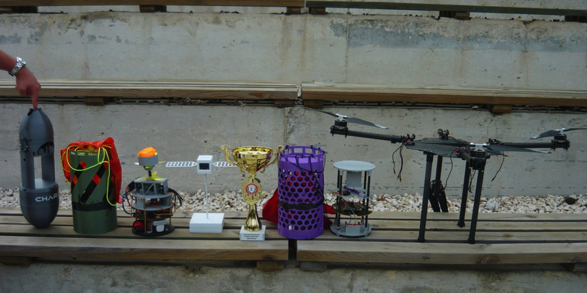
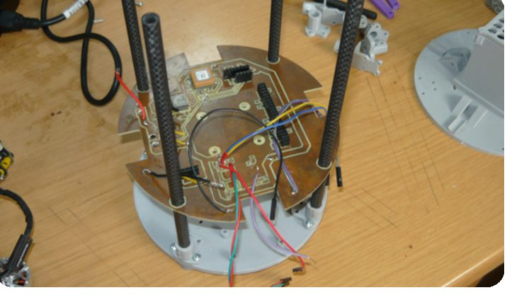
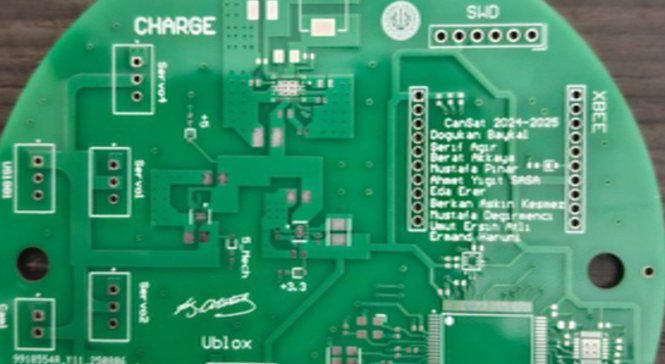
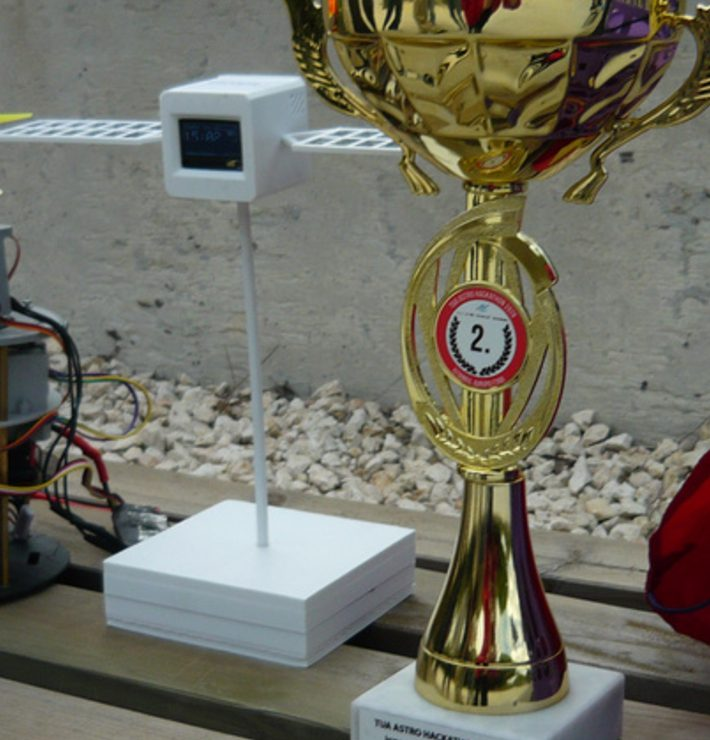
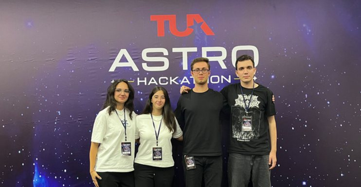
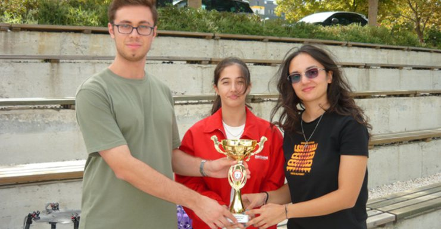
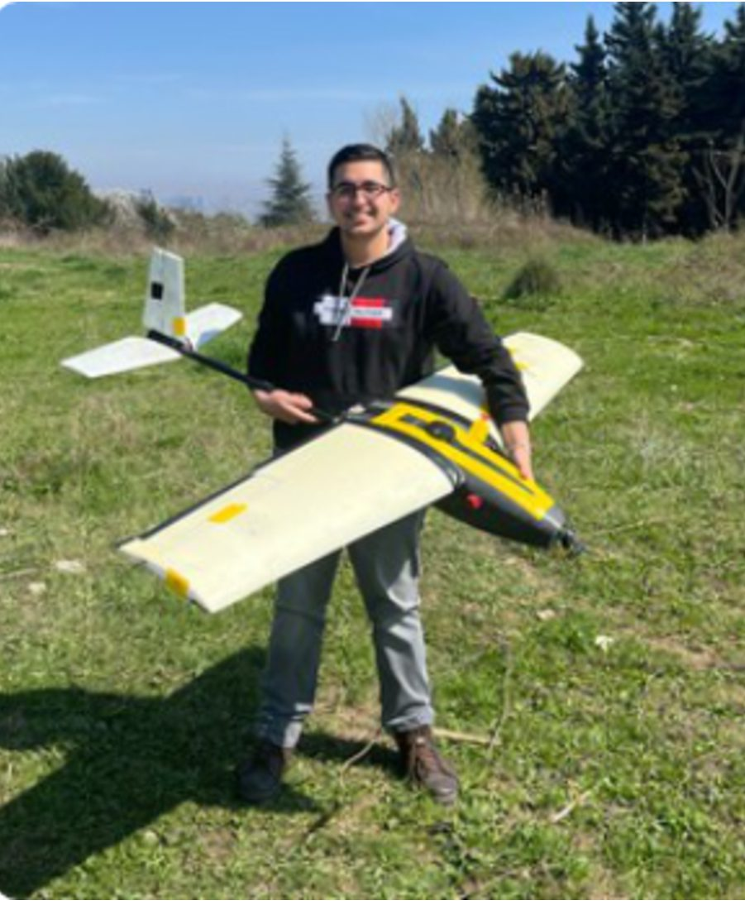
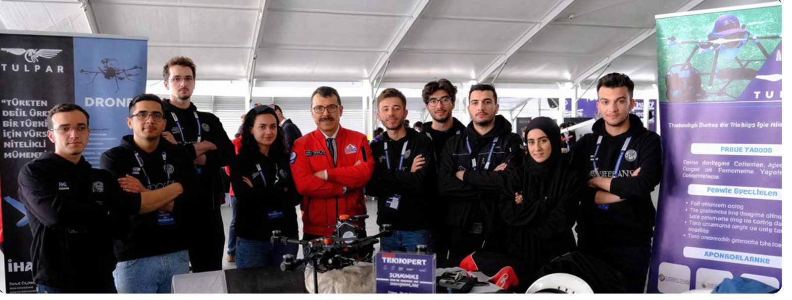

Elektronik Birim Kaptanı
Arda Sağdıç
+90 544 577 70 80 ardafiratsagdic@gmail.comCerrahpaşa Havacılık ve Ar-Ge Takımı
Tasarlıyoruz. Üretiyoruz. Uçuruyoruz.
01Takım
CHARGE, İstanbul Üniversitesi-Cerrahpaşa Mühendislik Fakültesi öğrencilerinden oluşan bir havacılık ve Ar-Ge takımıdır. İnsansız hava araçları ve model uydu sistemleri üzerine ulusal ve uluslararası yarışmalara hazırlanıyoruz.
2020'den bu yana her yıl TEKNOFEST finallerinde yer aldık. 2025'te CanSat yarışmasıyla ülkemizi ABD'de temsil ettik.

“Dik olarak yükselebilen ve havada asılı kalabilen araç fikri, muhtemelen insanoğlunun uçmayı hayal edişiyle aynı zamanda doğmuştur.”
Igor Sikorsky · 1938
Misyonumuz
“Teknoloji üreten bir Türkiye için nitelikli mühendis” olma yolunda edindiğimiz tecrübe, bilgi ve teknolojiyi insanlık yararına sunmak; çağın gerekliliklerini öngörebilen ve ülkesini ileri taşıyan bir mühendis neslinin yetişmesine katkıda bulunmak.
Vizyonumuz
İHA ve model uydu sistemlerinin elektronik, yazılım ve mekanik alt sistemlerini özgün fikirlerle geliştirmek; yerli kumanda, uçuş kontrol kartı, RF ekipmanları ve yer kontrol istasyonunu takımımız bünyesinde üretmek.
02Sistem
Model uydu (CanSat), gerçek bir uydunun tüm alt sistemlerini — güç, haberleşme, sensörler ve iniş sistemi — küçük bir gövdeye sığdıran bir mühendislik projesidir. Roketle irtifaya çıkarılır, iniş sırasında topladığı verileri yer istasyonuna iletir.


03Uçuş
04Sicil
Uluslararası Model Uydu Yarışması · Virginia, ABD
2025'te Auto-Gyro Descender görevine katıldık. Yüzlerce takım arasından finale kalan 41 takımdan biri olarak tüm görevleri yerine getirdik ve yarışma sertifikalarımızı aldık.
Havacılık, Uzay ve Teknoloji Festivali · 2020'den bu yana
| Yıl | Kategori | Rapor puanları | Sonuç |
|---|---|---|---|
| 2026 | Model Uydu | PDR 96 · CDR 91 | Süreç devam ediyor |
| 2023 | Döner & Sabit Kanat İHA | Döner KTR 92 · Sabit KTR 80 | 1060 takım arasından finaldeki 80 takımdan biri; sintine suyu temizleme görevi tamamlandı |
| 2022 | Döner & Sabit Kanat İHA | Döner KTR 85 · DTR 88 · Sabit KTR 83 | 4. — döner kanat, Detaylı Tasarım Raporu |
| 2021 | Döner Kanat İHA | KTR 76 · DTR 88 | 8. — 160 takımdan finaldeki 74 içinde, iki görevi de bitiren 14 takımdan biri |
| 2020 | Döner Kanat İHA | KTR 79 · DTR 87 | 8. — finale kalan 61 takım arasında |
Student Unmanned Aerial Systems · ABD
2026 başvuru sürecini başarıyla tamamladık.
Türkiye Uzay Ajansı · Ankara
İstanbul Avrupa bölgesinde 2. olduk; ulusal finale kalan 80 takımdan biri olarak küp uydu projemizi Ankara'da jürilere sunduk.




05Yol haritası
Model Uydu kategorisinde ÖTR ve KTR aşamalarını eksiksiz tamamlayıp finale kalmak; 2020'den bu yana süren final uçuşu başarımızı sürdürmek.
PDR, CDR ve FRR aşamalarını tamamlayıp uçuşa gitmek. Tüm görevleri eksiksiz yerine getirerek genel sıralamada 1. olmak.
Yerli ve milli teknolojilerimizle ABD'de görev uçuşunu tamamlayıp dereceyle dönmek.
2026'daki ikinciliğimizi geçerek İstanbul'da ve ulusal finalde 1. olmak.
06Sponsorluk
Araçlarımızın üretimi, yarışmalara katılımımız ve test süreçlerimiz sponsor desteğiyle yürüyor. Kompozit ve elektronik malzemeleri yedekleriyle temin edebilmek, ekibimizi ve araçlarımızı yarışma alanlarına ulaştırabilmek ve projeye rapor teslim tarihlerinden önce başlayabilmek için desteğinize ihtiyaç duyuyoruz.

07Bağlantı
Sponsorluk, iş birliği veya takıma katılım için birim kaptanlarımıza ulaşabilirsiniz.
Elektronik Birim Kaptanı
Arda Sağdıç
+90 544 577 70 80 ardafiratsagdic@gmail.comYazılım Birim Kaptanı
Asya Güney
+90 507 895 26 74 asyaguney14@gmail.comİstanbul Üniversitesi-Cerrahpaşa · Mühendislik Fakültesi · Avcılar, İstanbul